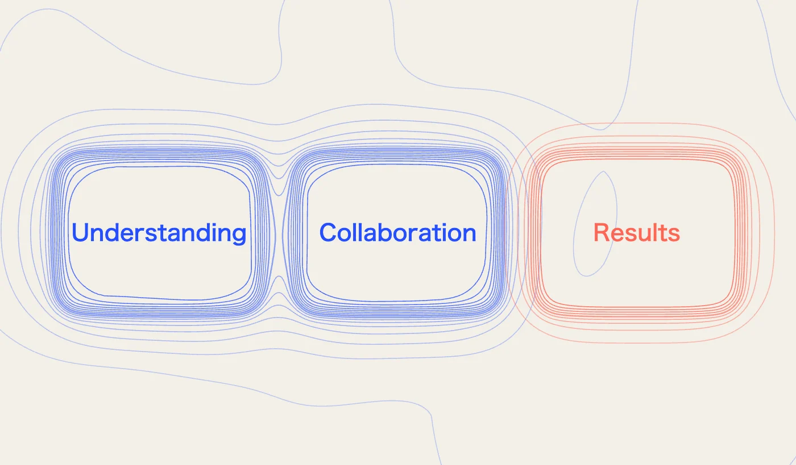

Understanding. Collaboration. Results

As a CEO who's seen their fair share of consulting engagements, I've learned what truly drives value. If you're a consulting firm looking to work with us, here's what I really, really want:
I. Understanding
Research: Know our industry. Bring insights: trends, competitors, and disruptions.
Immerse yourself: Really try to understand our vision, goals, business strategy, how we work, our key challenges, our culture, our blind spots .
Recognise we’re unique: We’re not looking for cookie-cutter recommendations; we want solutions tailored to our unique strengths and challenges.
Human centric: Our people must buy-in, engage and actively participate in the strategy and roadmap.
Be a catalyst: Help push us forward and overcome any inertia. Challenge assumptions, question why things are performed in a particular way, identify our strengths, and help us evolve.
Must be executable: Depending upon the assignment, we may want fresh thinking, different perspectives and/or a tailored and pragmatic execution plan. We don’t want impractical theories and ideas.
II. Collaboration
Collaborate: Work seamlessly with our internal teams, fostering a collaborative, productive and learning environment.
Open two-way communication: Keeping stakeholders informed is critical. Provide regular updates, proactively address potential roadblocks, escalate any issues and be very responsive to questions and concerns. Encourage our teams to ask for your independent views and feedback
Foster learning: Every interaction should teach us something about our business or strategy.
Adapt to change: Demonstrate your ability to adapt your approach as circumstances change, ensuring that your recommendations remain relevant and effective.
Simplicity and clarity: Proposals, plans and solutions should be easy to understand and buy into. Prioritize the most pressing issues, and deliver actionable solutions.
Align with our values: Your values and approach must align with our company's core values and mission. Lead by example. Help us enhance our reputation.
Value our time: Be prepared, be concise, be impactful. Every minute with you should count.
Build our capabilities: Transfer your skills. By the time you leave, my team must be able to carry the work forward.
III. Results
Transform, don't tweak: I want game-changing strategies that catapult us ahead of the competition. For example, how can AI help us advance?
Show me the numbers: Set ambitious but realistic KPIs. I expect a meaningful return on my investment
Data driven: Use cutting-edge research and analytics. Recommendations and plans should be data driven.
Creativity and innovation: Deliver fresh ideas and challenge assumptions. How can we differentiate ourselves? How do we leverage AI and emerging technologies, new ways of working? How do we create a sustainable impact?
Measure impact: Be able to quantify the results of your work, providing clear evidence of the value you've delivered.
High-quality work: Pay attention to detail, ensure accuracy, and present your findings in a clear and concise manner.
Buy-In: Our strategies and roadmap must inspire buy-in at every level - a workforce that’s engaged, motivated, and aligned with where we’re headed.
Execution, execution, execution: You’ve either helped us deliver change and transformation or you’ve shown us a clear path to delivery.
By prioritising these key factors, we can ensure that our consulting partnership is mutually beneficial and drives significant and sustainable value for our organisation.
A long term partnership requires: Understanding. Collaboration. Results